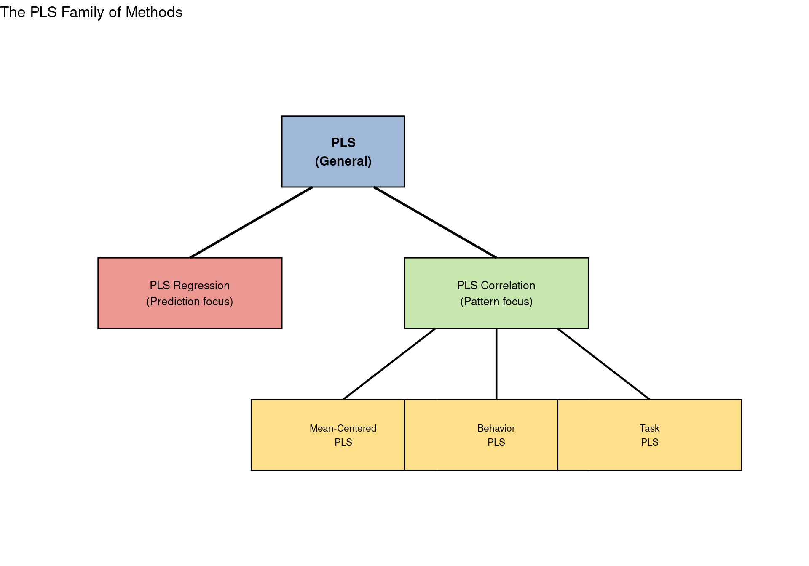
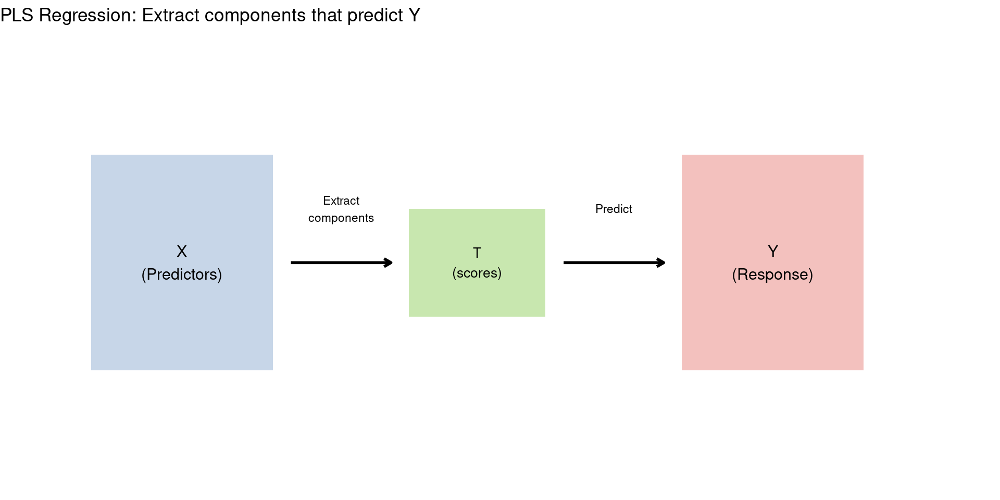
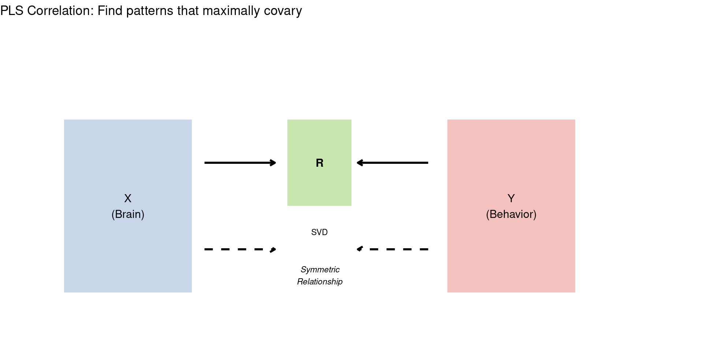
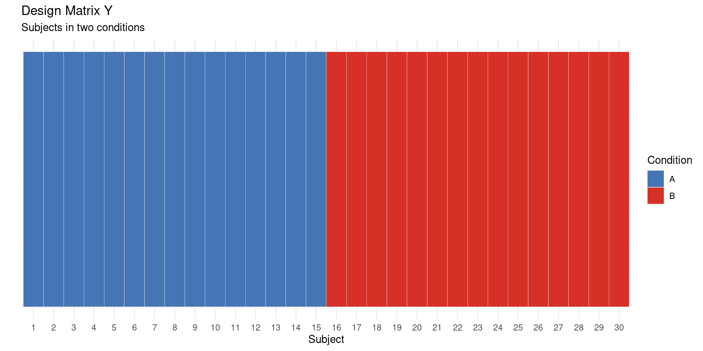
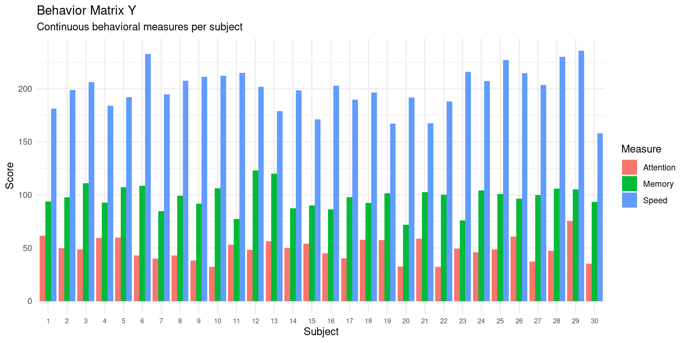
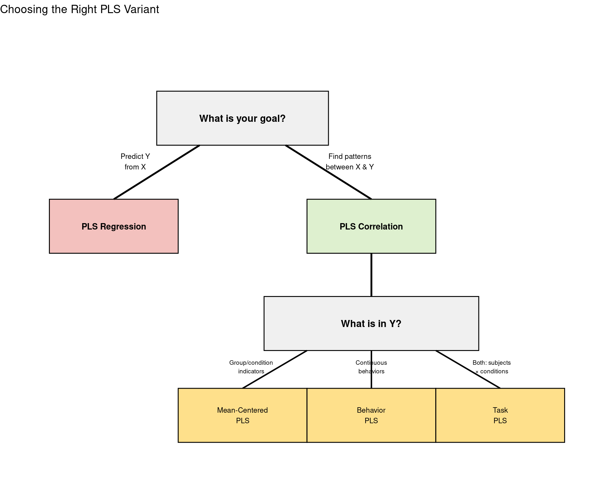

Code
library(ggplot2)
library(patchwork)
set.seed(42)Understanding PLS-R, PLS-C, and other variants
By the end of this lesson, you will understand:
PLS isn’t one method - it’s a family of related techniques. The key differences are:

PLS Regression was developed in chemometrics for prediction. The goal is to predict Y from X.
Key characteristics:

PLS-R iteratively finds:
Then deflates X and repeats for more components.
# Simplified PLS-R demonstration (1 component)
n <- 50; p <- 10
X <- matrix(rnorm(n * p), n, p)
Y <- X[, 1] + 0.5 * X[, 2] + rnorm(n, sd = 0.5) # Y depends on X1, X2
# Center
X_c <- scale(X, center = TRUE, scale = FALSE)
Y_c <- scale(Y, center = TRUE, scale = FALSE)
# NIPALS algorithm (simplified, 1 iteration)
# Initialize
w <- t(X_c) %*% Y_c
w <- w / sqrt(sum(w^2)) # Normalize
# Compute scores
t_scores <- X_c %*% w
# Compute loadings
p_load <- t(X_c) %*% t_scores / sum(t_scores^2)
# Regression coefficient for Y
c_coef <- sum(Y_c * t_scores) / sum(t_scores^2)
cat("PLS-R Results (1 component):\n")PLS-R Results (1 component):Weights (w) - showing top 3 predictors: X1: 0.933
X9: 0.226
X4: 0.156
R² with 1 component: 0.69 PLS Correlation (often just called “PLS” in neuroimaging) focuses on finding symmetric patterns between two variable sets.
Key characteristics:

PLS-C performs SVD on the cross-covariance (or cross-correlation) matrix:
\[R = X^T Y \quad \text{(or standardized)}\] \[R = U S V^T\]
Then computes scores:
# PLS-C demonstration
n <- 50; p1 <- 10; p2 <- 5
X <- matrix(rnorm(n * p1), n, p1)
Y <- matrix(rnorm(n * p2), n, p2)
# Create relationship
latent <- rnorm(n)
X[, 1:3] <- X[, 1:3] + outer(latent, c(0.8, 0.5, 0.3))
Y[, 1:2] <- Y[, 1:2] + outer(latent, c(0.7, 0.4))
# Center
X_c <- scale(X, center = TRUE, scale = FALSE)
Y_c <- scale(Y, center = TRUE, scale = FALSE)
# Cross-covariance
R <- t(X_c) %*% Y_c / (n - 1)
# SVD
svd_r <- svd(R)
cat("PLS-C Results:\n")PLS-C Results:Singular values: 1.368 0.58 0.479 0.322 0.32 Variance explained: 70.8 12.7 8.7 3.9 3.9 %| Aspect | PLS Regression | PLS Correlation |
|---|---|---|
| Primary goal | Prediction | Pattern finding |
| Algorithm | Iterative (NIPALS) | Single SVD |
| X and Y role | X predicts Y | Symmetric |
| Output | Regression coefficients | Saliences for both |
| Interpretation | Which X’s predict Y | Joint patterns in X and Y |
| Typical field | Chemometrics, ML | Neuroimaging |
In neuroimaging, PLS-C is further specialized based on the design matrix (Y):
The simplest form. Y is a design matrix indicating group/condition membership.
# Example: 2 conditions, 3 subjects each
n_per_cond <- 15
n_cond <- 2
n <- n_per_cond * n_cond
# Design matrix (dummy coded)
Y_design <- matrix(0, n, n_cond)
Y_design[1:n_per_cond, 1] <- 1
Y_design[(n_per_cond+1):n, 2] <- 1
# Visualize
design_df <- data.frame(
Subject = 1:n,
Condition = rep(c("A", "B"), each = n_per_cond)
)
p1 <- ggplot(design_df, aes(x = factor(Subject), y = 1, fill = Condition)) +
geom_tile(color = "white", height = 0.8) +
scale_fill_manual(values = c("A" = "#4575b4", "B" = "#d73027")) +
labs(title = "Design Matrix Y",
subtitle = "Subjects in two conditions",
x = "Subject", y = "") +
theme_minimal() +
theme(axis.text.y = element_blank())
# What Mean-Centered PLS finds
cat("Mean-Centered PLS asks:\n")Mean-Centered PLS asks:Which brain regions differ between conditions?
Use when: Comparing groups or conditions
Y contains continuous behavioral measures for each subject.
# Example: 3 behavioral measures
n <- 30
Y_behav <- data.frame(
Subject = 1:n,
Memory = rnorm(n, 100, 15),
Attention = rnorm(n, 50, 10),
Speed = rnorm(n, 200, 30)
)
# Visualize
library(tidyr)
Y_long <- pivot_longer(Y_behav, cols = -Subject, names_to = "Measure", values_to = "Score")
ggplot(Y_long, aes(x = factor(Subject), y = Score, fill = Measure)) +
geom_bar(stat = "identity", position = "dodge") +
labs(title = "Behavior Matrix Y",
subtitle = "Continuous behavioral measures per subject",
x = "Subject") +
theme_minimal() +
theme(axis.text.x = element_text(size = 7))
Use when: Relating brain patterns to continuous behavioral measures
Combines both: Subjects have multiple conditions, and the analysis finds patterns that differ across conditions.
Task PLS Data Structure:========================Brain data (X): 30 rows ( 10 subjects × 3 conditions)Design matrix (Y): 3 columns (condition indicators)
Finds: Brain patterns that characterize each condition
| Variant | Y_Contains | Question | Output |
|---|---|---|---|
| PLS Regression | Outcomes to predict | Which X’s predict Y? | Regression coefficients |
| Mean-Centered PLS | Group/condition codes | Which brain regions differ between groups? | Brain saliences per condition |
| Behavior PLS | Continuous measures | What brain pattern relates to behaviors? | Brain & behavior saliences |
| Task PLS | Condition codes (stacked) | What characterizes each condition? | Brain saliences, condition scores |
PLS-R is for prediction; PLS-C is for pattern discovery
Within PLS-C, the variant depends on what Y contains
Mean-Centered PLS: Compare groups/conditions
Behavior PLS: Relate brain to continuous measures
Task PLS: Characterize conditions with repeated measures
The core math (SVD on cross-product) is the same - the input differs!
In Lesson 4, we’ll compare PLS to related methods:
You’ll learn when each method is most appropriate!
---
title: "Lesson 3: Types of PLS Methods"
subtitle: "Understanding PLS-R, PLS-C, and other variants"
---
## Learning Objectives
By the end of this lesson, you will understand:
1. The difference between **PLS Regression** and **PLS Correlation**
2. How **Mean-Centered PLS**, **Behavior PLS**, and **Task PLS** differ
3. When to use each variant
4. How the choice affects interpretation
## The PLS Family Tree
PLS isn't one method - it's a family of related techniques. The key differences are:
1. **What matrix is decomposed** (covariance vs correlation)
2. **What the second dataset contains** (behaviors, tasks, groups)
3. **Whether prediction or pattern-finding is the goal**
```{r}
#| label: setup
#| message: false
library(ggplot2)
library(patchwork)
set.seed(42)
```
```{r}
#| label: family-tree
#| echo: false
#| fig-width: 10
#| fig-height: 7
# Family tree diagram
ggplot() +
# Root
annotate("rect", xmin = 4, xmax = 6, ymin = 6, ymax = 7,
fill = "#4575b4", alpha = 0.5, color = "black") +
annotate("text", x = 5, y = 6.5, label = "PLS\n(General)", size = 4, fontface = "bold") +
# Branches
geom_segment(aes(x = 4.5, xend = 2.5, y = 6, yend = 5), linewidth = 1) +
geom_segment(aes(x = 5.5, xend = 7.5, y = 6, yend = 5), linewidth = 1) +
# PLS-R branch
annotate("rect", xmin = 1, xmax = 4, ymin = 4, ymax = 5,
fill = "#d73027", alpha = 0.5, color = "black") +
annotate("text", x = 2.5, y = 4.5, label = "PLS Regression\n(Prediction focus)", size = 3.5) +
# PLS-C branch
annotate("rect", xmin = 6, xmax = 9, ymin = 4, ymax = 5,
fill = "#91cf60", alpha = 0.5, color = "black") +
annotate("text", x = 7.5, y = 4.5, label = "PLS Correlation\n(Pattern focus)", size = 3.5) +
# Sub-branches of PLS-C
geom_segment(aes(x = 6.5, xend = 5, y = 4, yend = 3), linewidth = 0.8) +
geom_segment(aes(x = 7.5, xend = 7.5, y = 4, yend = 3), linewidth = 0.8) +
geom_segment(aes(x = 8.5, xend = 10, y = 4, yend = 3), linewidth = 0.8) +
annotate("rect", xmin = 3.5, xmax = 6.5, ymin = 2, ymax = 3,
fill = "#fee08b", color = "black") +
annotate("text", x = 5, y = 2.5, label = "Mean-Centered\nPLS", size = 3) +
annotate("rect", xmin = 6, xmax = 9, ymin = 2, ymax = 3,
fill = "#fee08b", color = "black") +
annotate("text", x = 7.5, y = 2.5, label = "Behavior\nPLS", size = 3) +
annotate("rect", xmin = 8.5, xmax = 11.5, ymin = 2, ymax = 3,
fill = "#fee08b", color = "black") +
annotate("text", x = 10, y = 2.5, label = "Task\nPLS", size = 3) +
xlim(0, 12) + ylim(1, 8) +
theme_void() +
labs(title = "The PLS Family of Methods")
```
## PLS Regression (PLS-R)
### The Prediction Goal
**PLS Regression** was developed in chemometrics for **prediction**. The goal is to predict Y from X.
Key characteristics:
- Iterative algorithm (NIPALS)
- Extracts components from X that best predict Y
- Can handle more predictors than observations
- Output includes regression coefficients
### How PLS-R Works
```{r}
#| label: pls-r-concept
#| echo: false
#| fig-width: 10
#| fig-height: 5
ggplot() +
# X data
annotate("rect", xmin = 0.5, xmax = 2.5, ymin = 1, ymax = 3,
fill = "#4575b4", alpha = 0.3) +
annotate("text", x = 1.5, y = 2, label = "X\n(Predictors)", size = 4) +
# Extract
geom_segment(aes(x = 2.7, xend = 3.8, y = 2, yend = 2),
arrow = arrow(length = unit(0.2, "cm")), linewidth = 1) +
annotate("text", x = 3.25, y = 2.5, label = "Extract\ncomponents", size = 3) +
# Components
annotate("rect", xmin = 4, xmax = 5.5, ymin = 1.5, ymax = 2.5,
fill = "#91cf60", alpha = 0.5) +
annotate("text", x = 4.75, y = 2, label = "T\n(scores)", size = 3.5) +
# Predict
geom_segment(aes(x = 5.7, xend = 6.8, y = 2, yend = 2),
arrow = arrow(length = unit(0.2, "cm")), linewidth = 1) +
annotate("text", x = 6.25, y = 2.5, label = "Predict", size = 3) +
# Y predicted
annotate("rect", xmin = 7, xmax = 9, ymin = 1, ymax = 3,
fill = "#d73027", alpha = 0.3) +
annotate("text", x = 8, y = 2, label = "Y\n(Response)", size = 4) +
xlim(0, 10) + ylim(0, 4) +
theme_void() +
labs(title = "PLS Regression: Extract components that predict Y")
```
### Mathematical Formulation
PLS-R iteratively finds:
1. **Weight vectors** w that maximize cov(Xw, Y)
2. **Scores** t = Xw
3. **Loadings** p that relate t back to X
4. **Regression of Y on t**
Then deflates X and repeats for more components.
```{r}
#| label: pls-r-demo
# Simplified PLS-R demonstration (1 component)
n <- 50; p <- 10
X <- matrix(rnorm(n * p), n, p)
Y <- X[, 1] + 0.5 * X[, 2] + rnorm(n, sd = 0.5) # Y depends on X1, X2
# Center
X_c <- scale(X, center = TRUE, scale = FALSE)
Y_c <- scale(Y, center = TRUE, scale = FALSE)
# NIPALS algorithm (simplified, 1 iteration)
# Initialize
w <- t(X_c) %*% Y_c
w <- w / sqrt(sum(w^2)) # Normalize
# Compute scores
t_scores <- X_c %*% w
# Compute loadings
p_load <- t(X_c) %*% t_scores / sum(t_scores^2)
# Regression coefficient for Y
c_coef <- sum(Y_c * t_scores) / sum(t_scores^2)
cat("PLS-R Results (1 component):\n")
cat("Weights (w) - showing top 3 predictors:\n")
top3 <- order(abs(w), decreasing = TRUE)[1:3]
for (i in top3) {
cat(sprintf(" X%d: %.3f\n", i, w[i]))
}
cat("\nR² with 1 component:", round(cor(t_scores * c_coef, Y_c)^2, 3), "\n")
```
### When to Use PLS-R
::: {.callout-note}
## Use PLS-R When:
- Your goal is **prediction**
- You have more predictors than observations (p > n)
- You want **regression coefficients**
- You're coming from a chemometrics/machine learning context
:::
## PLS Correlation (PLS-C)
### The Pattern-Finding Goal
**PLS Correlation** (often just called "PLS" in neuroimaging) focuses on finding **symmetric patterns** between two variable sets.
Key characteristics:
- Single SVD operation
- Treats X and Y symmetrically
- Finds patterns that maximally covary
- No prediction coefficients
### How PLS-C Works
```{r}
#| label: pls-c-concept
#| echo: false
#| fig-width: 10
#| fig-height: 5
ggplot() +
# X data
annotate("rect", xmin = 0.5, xmax = 2.5, ymin = 1, ymax = 3,
fill = "#4575b4", alpha = 0.3) +
annotate("text", x = 1.5, y = 2, label = "X\n(Brain)", size = 4) +
# Cross-cov
geom_segment(aes(x = 2.7, xend = 3.8, y = 2.5, yend = 2.5),
arrow = arrow(length = unit(0.2, "cm")), linewidth = 1) +
geom_segment(aes(x = 6.2, xend = 5.1, y = 2.5, yend = 2.5),
arrow = arrow(length = unit(0.2, "cm")), linewidth = 1) +
# R matrix
annotate("rect", xmin = 4, xmax = 5, ymin = 2, ymax = 3,
fill = "#91cf60", alpha = 0.5) +
annotate("text", x = 4.5, y = 2.5, label = "R", size = 4, fontface = "bold") +
annotate("text", x = 4.5, y = 1.7, label = "SVD", size = 3) +
# Y data
annotate("rect", xmin = 6.5, xmax = 8.5, ymin = 1, ymax = 3,
fill = "#d73027", alpha = 0.3) +
annotate("text", x = 7.5, y = 2, label = "Y\n(Behavior)", size = 4) +
# Both contribute to pattern
geom_segment(aes(x = 2.7, xend = 3.8, y = 1.5, yend = 1.5),
arrow = arrow(length = unit(0.2, "cm")), linewidth = 1, linetype = "dashed") +
geom_segment(aes(x = 6.2, xend = 5.1, y = 1.5, yend = 1.5),
arrow = arrow(length = unit(0.2, "cm")), linewidth = 1, linetype = "dashed") +
annotate("text", x = 4.5, y = 1.2, label = "Symmetric\nRelationship", size = 3, fontface = "italic") +
xlim(0, 10) + ylim(0.5, 4) +
theme_void() +
labs(title = "PLS Correlation: Find patterns that maximally covary")
```
### Mathematical Formulation
PLS-C performs SVD on the cross-covariance (or cross-correlation) matrix:
$$R = X^T Y \quad \text{(or standardized)}$$
$$R = U S V^T$$
Then computes scores:
- Brain scores: $X \cdot U$
- Behavior scores: $Y \cdot V$
```{r}
#| label: pls-c-demo
# PLS-C demonstration
n <- 50; p1 <- 10; p2 <- 5
X <- matrix(rnorm(n * p1), n, p1)
Y <- matrix(rnorm(n * p2), n, p2)
# Create relationship
latent <- rnorm(n)
X[, 1:3] <- X[, 1:3] + outer(latent, c(0.8, 0.5, 0.3))
Y[, 1:2] <- Y[, 1:2] + outer(latent, c(0.7, 0.4))
# Center
X_c <- scale(X, center = TRUE, scale = FALSE)
Y_c <- scale(Y, center = TRUE, scale = FALSE)
# Cross-covariance
R <- t(X_c) %*% Y_c / (n - 1)
# SVD
svd_r <- svd(R)
cat("PLS-C Results:\n")
cat("Singular values:", round(svd_r$d, 3), "\n")
cat("Variance explained:", round((svd_r$d^2)/sum(svd_r$d^2)*100, 1), "%\n")
```
### When to Use PLS-C
::: {.callout-note}
## Use PLS-C When:
- Your goal is **understanding relationships**
- Both variable sets are equally important
- You want to know which variables **on both sides** contribute
- You're in a neuroimaging/psychology context
:::
## PLS-R vs PLS-C Comparison
```{r}
#| label: comparison-table
#| echo: false
comparison <- data.frame(
Aspect = c("Primary goal", "Algorithm", "X and Y role", "Output",
"Interpretation", "Typical field"),
`PLS Regression` = c("Prediction", "Iterative (NIPALS)", "X predicts Y",
"Regression coefficients", "Which X's predict Y",
"Chemometrics, ML"),
`PLS Correlation` = c("Pattern finding", "Single SVD", "Symmetric",
"Saliences for both", "Joint patterns in X and Y",
"Neuroimaging")
)
knitr::kable(comparison, col.names = c("Aspect", "PLS Regression", "PLS Correlation"),
caption = "PLS-R vs PLS-C Comparison")
```
## Neuroimaging PLS Variants
In neuroimaging, PLS-C is further specialized based on the **design matrix** (Y):
### Mean-Centered PLS (Task PLS)
The simplest form. Y is a **design matrix** indicating group/condition membership.
```{r}
#| label: mean-centered
#| fig-width: 10
#| fig-height: 5
# Example: 2 conditions, 3 subjects each
n_per_cond <- 15
n_cond <- 2
n <- n_per_cond * n_cond
# Design matrix (dummy coded)
Y_design <- matrix(0, n, n_cond)
Y_design[1:n_per_cond, 1] <- 1
Y_design[(n_per_cond+1):n, 2] <- 1
# Visualize
design_df <- data.frame(
Subject = 1:n,
Condition = rep(c("A", "B"), each = n_per_cond)
)
p1 <- ggplot(design_df, aes(x = factor(Subject), y = 1, fill = Condition)) +
geom_tile(color = "white", height = 0.8) +
scale_fill_manual(values = c("A" = "#4575b4", "B" = "#d73027")) +
labs(title = "Design Matrix Y",
subtitle = "Subjects in two conditions",
x = "Subject", y = "") +
theme_minimal() +
theme(axis.text.y = element_blank())
# What Mean-Centered PLS finds
cat("Mean-Centered PLS asks:\n")
cat("Which brain regions differ between conditions?\n\n")
print(p1)
```
**Use when**: Comparing groups or conditions
### Behavior PLS
Y contains **continuous behavioral measures** for each subject.
```{r}
#| label: behavior-pls
#| fig-width: 10
#| fig-height: 5
# Example: 3 behavioral measures
n <- 30
Y_behav <- data.frame(
Subject = 1:n,
Memory = rnorm(n, 100, 15),
Attention = rnorm(n, 50, 10),
Speed = rnorm(n, 200, 30)
)
# Visualize
library(tidyr)
Y_long <- pivot_longer(Y_behav, cols = -Subject, names_to = "Measure", values_to = "Score")
ggplot(Y_long, aes(x = factor(Subject), y = Score, fill = Measure)) +
geom_bar(stat = "identity", position = "dodge") +
labs(title = "Behavior Matrix Y",
subtitle = "Continuous behavioral measures per subject",
x = "Subject") +
theme_minimal() +
theme(axis.text.x = element_text(size = 7))
```
**Use when**: Relating brain patterns to continuous behavioral measures
### Task PLS
Combines both: Subjects have multiple conditions, and the analysis finds patterns that differ across conditions.
```{r}
#| label: task-pls
# Task PLS structure:
# Rows = subjects × conditions (stacked)
# Y = condition indicators
n_subj <- 10
n_cond <- 3
cat("Task PLS Data Structure:\n")
cat("========================\n")
cat("Brain data (X): ", n_subj * n_cond, "rows (", n_subj, "subjects ×",
n_cond, "conditions)\n")
cat("Design matrix (Y):", n_cond, "columns (condition indicators)\n")
cat("\nFinds: Brain patterns that characterize each condition\n")
```
## Choosing Between Variants
```{r}
#| label: decision-diagram
#| echo: false
#| fig-width: 10
#| fig-height: 8
ggplot() +
# Question 1
annotate("rect", xmin = 3, xmax = 7, ymin = 7, ymax = 8,
fill = "#f0f0f0", color = "black") +
annotate("text", x = 5, y = 7.5, label = "What is your goal?", size = 4, fontface = "bold") +
# Branches
geom_segment(aes(x = 4, xend = 2, y = 7, yend = 6), linewidth = 1) +
annotate("text", x = 2.5, y = 6.7, label = "Predict Y\nfrom X", size = 3) +
geom_segment(aes(x = 6, xend = 8, y = 7, yend = 6), linewidth = 1) +
annotate("text", x = 7.5, y = 6.7, label = "Find patterns\nbetween X & Y", size = 3) +
# PLS-R
annotate("rect", xmin = 0.5, xmax = 3.5, ymin = 5, ymax = 6,
fill = "#d73027", alpha = 0.3, color = "black") +
annotate("text", x = 2, y = 5.5, label = "PLS Regression", size = 3.5, fontface = "bold") +
# PLS-C branch
annotate("rect", xmin = 6.5, xmax = 9.5, ymin = 5, ymax = 6,
fill = "#91cf60", alpha = 0.3, color = "black") +
annotate("text", x = 8, y = 5.5, label = "PLS Correlation", size = 3.5, fontface = "bold") +
# Question 2
geom_segment(aes(x = 8, xend = 8, y = 5, yend = 4.2), linewidth = 1) +
annotate("rect", xmin = 5.5, xmax = 10.5, ymin = 3.2, ymax = 4.2,
fill = "#f0f0f0", color = "black") +
annotate("text", x = 8, y = 3.7, label = "What is in Y?", size = 4, fontface = "bold") +
# Final branches
geom_segment(aes(x = 6.5, xend = 5, y = 3.2, yend = 2.5), linewidth = 0.8) +
geom_segment(aes(x = 8, xend = 8, y = 3.2, yend = 2.5), linewidth = 0.8) +
geom_segment(aes(x = 9.5, xend = 11, y = 3.2, yend = 2.5), linewidth = 0.8) +
annotate("text", x = 5.2, y = 2.9, label = "Group/condition\nindicators", size = 2.5) +
annotate("text", x = 8, y = 2.9, label = "Continuous\nbehaviors", size = 2.5) +
annotate("text", x = 10.8, y = 2.9, label = "Both: subjects\n× conditions", size = 2.5) +
annotate("rect", xmin = 3.5, xmax = 6.5, ymin = 1.5, ymax = 2.5,
fill = "#fee08b", color = "black") +
annotate("text", x = 5, y = 2, label = "Mean-Centered\nPLS", size = 3) +
annotate("rect", xmin = 6.5, xmax = 9.5, ymin = 1.5, ymax = 2.5,
fill = "#fee08b", color = "black") +
annotate("text", x = 8, y = 2, label = "Behavior\nPLS", size = 3) +
annotate("rect", xmin = 9.5, xmax = 12.5, ymin = 1.5, ymax = 2.5,
fill = "#fee08b", color = "black") +
annotate("text", x = 11, y = 2, label = "Task\nPLS", size = 3) +
xlim(0, 13) + ylim(1, 9) +
theme_void() +
labs(title = "Choosing the Right PLS Variant")
```
## Summary Table
```{r}
#| label: summary-table
#| echo: false
summary_df <- data.frame(
Variant = c("PLS Regression", "Mean-Centered PLS", "Behavior PLS", "Task PLS"),
Y_Contains = c("Outcomes to predict", "Group/condition codes",
"Continuous measures", "Condition codes (stacked)"),
Question = c("Which X's predict Y?", "Which brain regions differ between groups?",
"What brain pattern relates to behaviors?",
"What characterizes each condition?"),
Output = c("Regression coefficients", "Brain saliences per condition",
"Brain & behavior saliences", "Brain saliences, condition scores")
)
knitr::kable(summary_df, caption = "PLS Variants Summary")
```
## Key Takeaways
::: {.callout-tip}
## Remember
1. **PLS-R** is for prediction; **PLS-C** is for pattern discovery
2. Within PLS-C, the variant depends on **what Y contains**
3. **Mean-Centered PLS**: Compare groups/conditions
4. **Behavior PLS**: Relate brain to continuous measures
5. **Task PLS**: Characterize conditions with repeated measures
6. The core math (SVD on cross-product) is the same - the input differs!
:::
## Next Lesson
In [Lesson 4](lesson-04-comparisons.qmd), we'll compare PLS to related methods:
- Canonical Correlation Analysis (CCA)
- Principal Component Regression (PCR)
- Reduced Rank Regression (RRR)
You'll learn when each method is most appropriate!